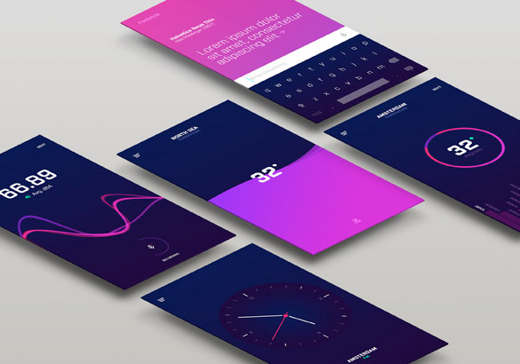
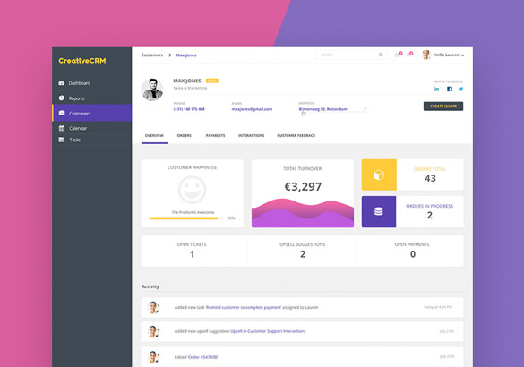

Handmade for Everyone
Flutter과 Dart를 이용해서 android와 ios에서 모두 쓸수 있는 Application을 만들어 보았다. 대중교통을 이용할때 언제 도착할지 몰라 잠을 잘 수 없어서 불편한 적이 있던 경험을 토대로 사용자가 특정위치를 지정하고 그 위치에 가까이 갔을때 알림을 주는 앱을 구상 하였습니다. 배포는 google play store에서만 할 예정이여서 android 쪽에 더 많은 시간을 할애 하였습니다.
이번 프로젝트를 진행하면서 api를 처음 다루어 보았는데 사용하면서 json파일을 다루는 법을 알게 되었다. 또한 현재 위치를 가지고 오는 googel_maps_flutter , geolocator 등등 과 같은 많은 package들을 사용하며 reference들을 읽고 사용하는 법들을 배울수 있었다. 또한 android를 build 하기위해서 androidmanifest.xml, gradle.build 파일을 수정하면서 android 개발의 기초적인 지식을 쌓을수 있었습니다. /* trouble shooting */ /* google play console capture */
비록 특정 기기에서 error가 나서 아직까지는 배포를 하지 못 했지만 앱 개발 경험을 해 볼수 있는 좋은 경험 이었다.